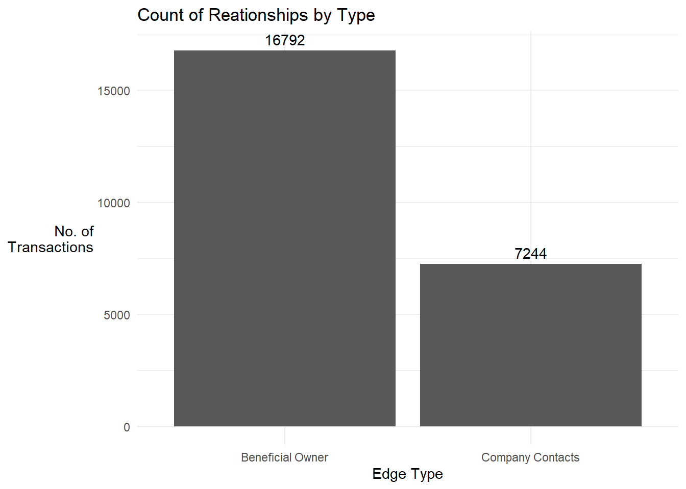
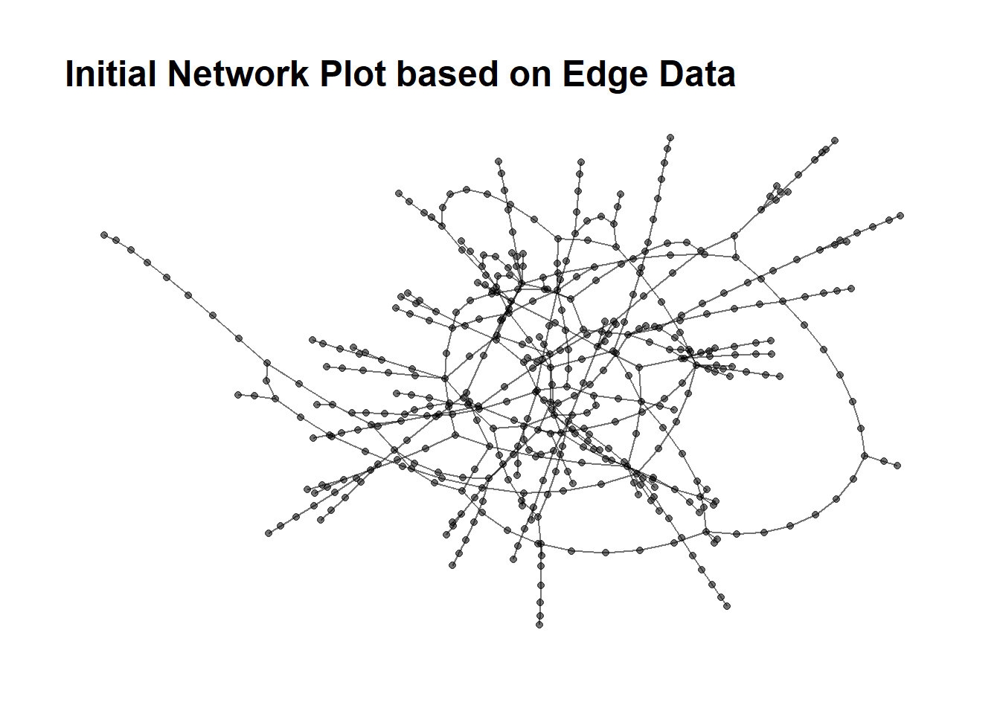
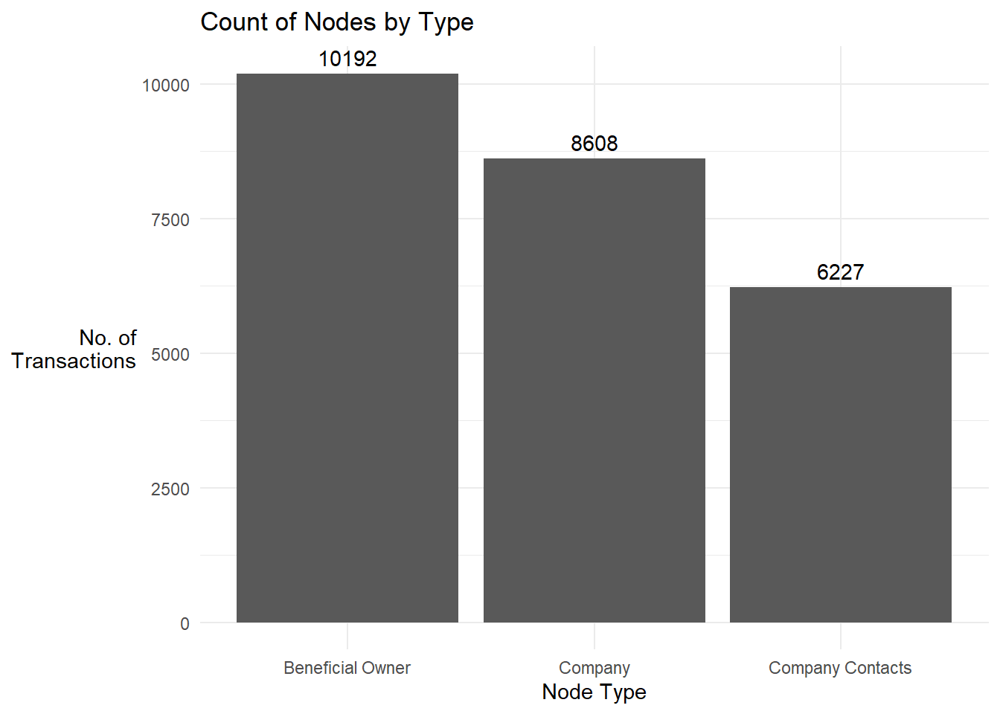

Take-Home Ex3
(First Published: Jun 18, 2023)
Load Packages
Import data
Extract the node data frame
Show the code
# Extract the nodes data
# convert the fields to characters first to extract the information embedded as list
mc3_nodes <- as_tibble(mc3$nodes) %>%
# mutate() and as.character() are used to convert the field data type from list to character
mutate(country = as.character(country),
id = as.character(id),
product_services = as.character(product_services),
revenue_omu = as.numeric(as.character(revenue_omu)),
type = as.character(type)) %>%
# Re-organise the columns
select(id,country,type,product_services,revenue_omu) %>%
# remove duplicate records
distinct() %>%
# omu is denominated in smaller currency units, so we will round all values to the nearest home unit
mutate(revenue_omu = round(revenue_omu,0)) Note: Have to be mindful of character((0)) and unknown. Recode to NAs before passing to text sensing or put as as part of the stop words during text sensing
In terms of edges, we will have BO-Coy, CC-Coy, Coy-Coy but we would probably not see the BO-CO
Extract Edges data frame
Show the code
# Extract the edge data
mc3_edges <- as_tibble(mc3$links) %>%
# remove the duplicates
distinct() %>%
#mutate() and as.character() are used to convert the field data type from list to character
mutate(source = as.character(source),
target = as.character(target),
type = as.character(type)) %>%
group_by(source, target, type) %>%
summarise(weight = n()) %>%
# Included to ensure self-links are excluded, although there's none found
filter(source!=target) %>%
ungroupAlthough included in the codes about, there is no duplicate records or self-links
Grouping by source, target and type does not reduce the number of records, and the weight for all records show 1. This means the edge information contain the relationships between the entities involved and does not connote the volume of transactions between them
We will store the mc3 nodes and edges data frames in rds format for ease of subsequent retrieval. This “write” code need only be executed once. Thereafter we can reload the mc3_nodes and edges data frames for data wrangling.
Show the code
Initial Data Exploration
- Explore the edge data frame
We first inspect the data frame using skim()
| Name | mc3_edges |
| Number of rows | 24036 |
| Number of columns | 4 |
| _______________________ | |
| Column type frequency: | |
| character | 3 |
| numeric | 1 |
| ________________________ | |
| Group variables | None |
Variable type: character
| skim_variable | n_missing | complete_rate | min | max | empty | n_unique | whitespace |
|---|---|---|---|---|---|---|---|
| source | 0 | 1 | 6 | 700 | 0 | 12856 | 0 |
| target | 0 | 1 | 6 | 28 | 0 | 21265 | 0 |
| type | 0 | 1 | 16 | 16 | 0 | 2 | 0 |
Variable type: numeric
| skim_variable | n_missing | complete_rate | mean | sd | p0 | p25 | p50 | p75 | p100 | hist |
|---|---|---|---|---|---|---|---|---|---|---|
| weight | 0 | 1 | 1 | 0 | 1 | 1 | 1 | 1 | 1 | ▁▁▇▁▁ |
There is no field with missing value
There are 2 unique relationship types: Entity - Beneficial Owner (BO), Entity - Company Contact (CC)
The total number of entities under source and target columns is 34,121. This forms the upper bound of entities/nodes we should have in the analysis.
- Get count of records by type
Show the code
mc3_edges %>%
group_by(type) %>%
summarise(count = n()) %>%
ggplot(aes(x = type, y = count)) +
geom_bar(stat = "identity") +
geom_text(aes(label = count), vjust = -0.5) +
theme_minimal() +
labs(x = "Edge Type", y = "No. of\nTransactions",
title = 'Count of Reationships by Type') +
theme(axis.title.y = element_text(angle = 0, vjust = 0.5, hjust = 1))
- Quick visualisation of the network
!! I didn’t do the left_join to mc3_nodes as shown in prof’s steps as this resulted in more records, which kind of defeat the purpose of doing distinct() above !!
Show the code
# compute the centrality measures for nodes
mc3_graph <- tbl_graph(nodes = mc3_nodes_fr_edges,
edges = mc3_edges,
directed = FALSE) %>%
mutate(betweenness_centrality = centrality_betweenness(),
closeness_centrality = centrality_closeness())
# set random seed for consistency
set.seed(123)
# plot the graph
mc3_graph %>%
filter(betweenness_centrality >= 100000) %>%
ggraph(layout = "fr") +
geom_edge_link(aes(alpha=0.5)) +
geom_node_point(aes(
linewidth = betweenness_centrality,
alpha = 0.5)) +
scale_size_continuous(range=c(0.01,0.5))+
theme_graph() +
labs(title = "Initial Network Plot based on Edge Data")+
theme(legend.position = "none")
- Explore the nodes dataframe
We will first do a left join with the entities featured in the edge data frame mc3_nodes1 to remove all irrelevant nodes record
No node record was dropped
The edge data frame contains more entities than those provided in the nodes data frame
| Name | mc3_nodes |
| Number of rows | 25027 |
| Number of columns | 5 |
| _______________________ | |
| Column type frequency: | |
| character | 4 |
| numeric | 1 |
| ________________________ | |
| Group variables | None |
Variable type: character
| skim_variable | n_missing | complete_rate | min | max | empty | n_unique | whitespace |
|---|---|---|---|---|---|---|---|
| id | 0 | 1 | 6 | 64 | 0 | 22929 | 0 |
| country | 0 | 1 | 2 | 15 | 0 | 100 | 0 |
| type | 0 | 1 | 7 | 16 | 0 | 3 | 0 |
| product_services | 0 | 1 | 4 | 1737 | 0 | 3244 | 0 |
Variable type: numeric
| skim_variable | n_missing | complete_rate | mean | sd | p0 | p25 | p50 | p75 | p100 | hist |
|---|---|---|---|---|---|---|---|---|---|---|
| revenue_omu | 18920 | 0.24 | 1822155.58 | 18184433.44 | 3652 | 7676.5 | 16211 | 48327.5 | 310612303 | ▇▁▁▁▁ |
Check the frequency count of various product types
Show the code
# Get the freq count of records by product_services column
freq_count_pdt_svcs <- mc3_nodes %>%
group_by(product_services) %>%
summarise(count = n()) %>%
arrange(desc(count))
datatable(freq_count_pdt_svcs, class = "compact", options = list(pageLength = 5),
caption = "Table 1: Frequency Count of product_services Column",
rownames = FALSE)We noticed that there was a large number of the records with “character(0)” type for product_services. We re-coded this as Unknown.
Visualise frequency of node types
Show the code
mc3_nodes %>%
group_by(type) %>%
summarise(count = n()) %>%
ggplot(aes(x = type, y = count)) +
geom_bar(stat = "identity") +
geom_text(aes(label = count), vjust = -0.5) +
theme_minimal() +
labs(x = "Node Type", y = "No. of\nTransactions",
title = 'Count of Nodes by Type') +
theme(axis.title.y = element_text(angle = 0, vjust = 0.5, hjust = 1))